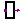
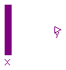

This package contains interface definitions (connectors) digital electrical components.
| Name | Description |
|---|---|
| Logic | Signal type in package Digital according to the IEEE 1164 STD_ULOGIC type |
| Logic values and their coding | |
| Digital port (both input/output possible) | |
| input DigitalSignal as connector | |
| DigitalOutput | output DigitalSignal as connector |
|  SISO | Single input, single output |
| Multiple input - single output |
A variable of type Logic is an Integer in the range 1-9. The Integer values have the following meaning:
| Logic value | Integer code | Meaning |
| 'U' | 1 | Uninitialized |
| 'X' | 2 | Forcing Unknown |
| '0' | 3 | Forcing 0 |
| '1' | 4 | Forcing 1 |
| 'Z' | 5 | High Impedance |
| 'W' | 6 | Weak Unknown |
| 'L' | 7 | Weak 0 |
| 'H' | 8 | Weak 1 |
| '-' | 9 | Don't care |
| Type | Name | Default | Description |
|---|---|---|---|
| min | |||
| max |
type Logic = Integer(min=1,max=9) "Signal type in package Digital according to the IEEE 1164 STD_ULOGIC type";
 Modelica.Electrical.Digital.Interfaces.LogicValue
Modelica.Electrical.Digital.Interfaces.LogicValue
Code Table:
| Logic value | Integer code | Meaning |
| 'U' | 1 | Uninitialized |
| 'X' | 2 | Forcing Unknown |
| '0' | 3 | Forcing 0 |
| '1' | 4 | Forcing 1 |
| 'Z' | 5 | High Impedance |
| 'W' | 6 | Weak Unknown |
| 'L' | 7 | Weak 0 |
| 'H' | 8 | Weak 1 |
| '-' | 9 | Don't care |
record LogicValue "Logic values and their coding" extends Modelica.Icons.Enumeration; constant Integer min=1; constant Integer max=9; constant Integer 'U'=1 "Uninitialized"; constant Integer 'X'=2 "Forcing Unknown"; constant Integer '0'=3 "Forcing 0"; constant Integer '1'=4 "Forcing 1"; constant Integer 'Z'=5 "High Impedance"; constant Integer 'W'=6 "Weak Unknown"; constant Integer 'L'=7 "Weak 0"; constant Integer 'H'=8 "Weak 1"; constant Integer '-'=9 "Don't care"; end LogicValue;
connector DigitalSignal = Logic "Digital port (both input/output possible)";
 Modelica.Electrical.Digital.Interfaces.DigitalInput
Modelica.Electrical.Digital.Interfaces.DigitalInput
connector DigitalInput = input DigitalSignal "input DigitalSignal as connector";
 Modelica.Electrical.Digital.Interfaces.DigitalOutput
Modelica.Electrical.Digital.Interfaces.DigitalOutput
connector DigitalOutput = output DigitalSignal "output DigitalSignal as connector";
 Modelica.Electrical.Digital.Interfaces.SISO
Modelica.Electrical.Digital.Interfaces.SISO

| Type | Name | Description |
|---|---|---|
| input | x | Connector of Digital input signal |
| output | y | Connector of Digital output signal |
partial block SISO "Single input, single output" import D = Modelica.Electrical.Digital; D.Interfaces.DigitalInput x "Connector of Digital input signal"; D.Interfaces.DigitalOutput y "Connector of Digital output signal"; end SISO;
 Modelica.Electrical.Digital.Interfaces.MISO
Modelica.Electrical.Digital.Interfaces.MISO
| Type | Name | Default | Description |
|---|---|---|---|
| n | 2 | Number of inputs |
| Type | Name | Description |
|---|---|---|
| input | x[n] | Connector of Digital input signal vector |
| output | y | Connector of Digital output signal |
partial block MISO "Multiple input - single output" import D = Modelica.Electrical.Digital; parameter Integer n(final min=2) = 2 "Number of inputs"; D.Interfaces.DigitalInput x[n] "Connector of Digital input signal vector"; D.Interfaces.DigitalOutput y "Connector of Digital output signal"; algorithm end MISO;